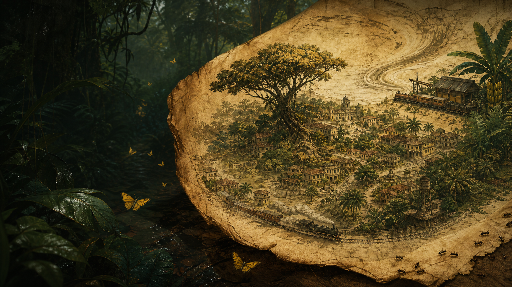

向外的人
冒险、肉体、离家、失控。名字像一扇向热带旷野打开的门。

目录中的全书分析已经把《百年孤独》拆成多个互相照亮的系统：圆形时间、空间衰败、名字的遗传、孤独的变奏、魔幻现实主义、香蕉公司与历史失忆。
这个页面把那些内容重新整理成可公开访问的阅读档案。你可以从任何一个入口开始，最后都会被带回同一个中心：人如何在孤独中建立世界，又如何亲手把世界交给风。
Supabase Atlas
下方章节由 Supabase 公共内容表加载；网络不可用时，会自动使用页面内置的文学档案。
Buendia Lineage
何塞·阿尔卡蒂奥系列向外冲撞，靠身体、欲望、行动和出走来确认世界；奥雷里亚诺系列向内凝视，在作坊、战争、金小鱼和沉默中把自己越关越深。
冒险、肉体、离家、失控。名字像一扇向热带旷野打开的门。
沉默、洞察、战争、作坊。名字像一间越走越深的房间。
乌尔苏拉、阿玛兰妲、丽贝卡、费尔南达把家族的秩序、拒绝、流放和幻觉撑到最后。
科学启蒙和童年奇迹，也是纯真被时间冻结的第一块证物。
不是天气，而是历史无法排水时形成的漫长停滞。
爱情的踪迹，也是命运在空气里留下的可见粉尘。
命运、书写、阅读和存在在同一刻重叠的元叙事核心。
History Beneath Magic
小说把殖民记忆、内战循环、外来资本、香蕉公司屠杀与官方失忆嵌进家族日常。魔幻不是逃避现实，而是现实被压迫到只能以荒诞显形。
三十二场战争把理想消耗成惯性，胜负不再通向更新，只通向更深的虚无。
现代性进入马孔多，带来速度、商品和外部秩序，也带来土地被重新编码的命运。
资本把城镇变成生产现场，又把死者从官方叙述中抹去。
Reading Method
看“多年以后”、终章阅读和羊皮卷如何让过去、现在、未来压缩在同一页。
把何塞·阿尔卡蒂奥与奥雷里亚诺分开看，再看名字如何把性格变成家族语法。
把冰、雨、黄蝶、金小鱼、蚂蚁和羊皮卷当作路标，沿着它们回到同一个中心。